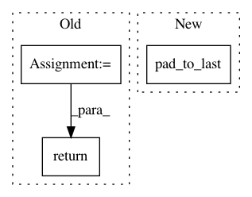

563acaf48cf475f4b125fd32374c6bb566049551,src/garage/torch/algos/vpg.py,VPG,process_samples,#VPG#Any#Any#,268
Before Change
average_discounted_return = (np.mean(
[path["returns"][0] for path in paths]))
undiscounted_returns = [sum(path["rewards"]) for path in paths]
average_return = np.mean(undiscounted_returns)
self._episode_reward_mean.extend(undiscounted_returns)
tabular.record("Iteration", itr)
tabular.record("AverageDiscountedReturn", average_discounted_return)
tabular.record("AverageReturn", average_return)
tabular.record("Extras/EpisodeRewardMean",
np.mean(self._episode_reward_mean))
tabular.record("NumTrajs", len(paths))
tabular.record("StdReturn", np.std(undiscounted_returns))
tabular.record("MaxReturn", np.max(undiscounted_returns))
tabular.record("MinReturn", np.min(undiscounted_returns))
return dict(average_return=average_return)
After Change
axis=0) for path in paths
])
rewards = torch.stack([
loss_function_utils.pad_to_last(path["rewards"],
total_length=self.max_path_length)
for path in paths
])
return valids, obs, actions, rewards
In pattern: SUPERPATTERN
Frequency: 3
Non-data size: 3
Instances
Project Name: rlworkgroup/garage
Commit Name: 563acaf48cf475f4b125fd32374c6bb566049551
Time: 2019-11-06
Author: 43084978+yonghyuc@users.noreply.github.com
File Name: src/garage/torch/algos/vpg.py
Class Name: VPG
Method Name: process_samples
Project Name: rlworkgroup/garage
Commit Name: c0fd41d73da7e7a71d6054e87370be35ca708e67
Time: 2020-10-21
Author: 31981600+yeukfu@users.noreply.github.com
File Name: src/garage/tf/algos/te_npo.py
Class Name: TENPO
Method Name: _train_once
Project Name: rlworkgroup/garage
Commit Name: 9262002a51f3ee6206f246d1237d452aa16b1342
Time: 2020-10-13
Author: 31981600+yeukfu@users.noreply.github.com
File Name: src/garage/tf/algos/_rl2npo.py
Class Name: RL2NPO
Method Name: _get_baseline_prediction